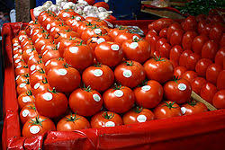

La biotecnología es una disciplina científica interdisciplinaria que se dedica al uso de organismos vivos, células, y sistemas biológicos para desarrollar productos y procesos beneficiosos para la humanidad. Esta área del conocimiento combina principios de biología, química, ingeniería y otras ciencias para aplicar técnicas y tecnologías en diversos campos con el objetivo de mejorar la calidad de vida y resolver problemas complejos.
La biotecnología se divide en varias subdisciplinas, cada una con su enfoque particular. Entre estas se incluyen la biotecnología roja (medicina y salud), verde (agricultura), blanca (industrial) y azul (recursos marinos y acuáticos). Cada subdisciplina contribuye de manera única a la aplicación de la biotecnología en distintos contextos, demostrando la versatilidad y el alcance de esta ciencia.
La Biotecnologia en la Medicina
En el ámbito de la medicina y la salud, la biotecnología ha permitido el desarrollo de medicamentos innovadores, terapias génicas, vacunas, y métodos de diagnóstico avanzados. Un ejemplo destacado es la producción de insulina mediante bacterias modificadas genéticamente, que ha revolucionado el tratamiento de la diabetes. Además, la biotecnología ha impulsado la creación de tratamientos personalizados basados en el análisis del ADN de los pacientes, ofreciendo soluciones más eficaces y precisas para enfermedades como el cáncer.
Uno de los mayores logros de la biotecnología en la medicina es el desarrollo de terapias génicas. Estas terapias implican la introducción, modificación o reemplazo de material genético dentro de las células de un paciente para tratar o prevenir enfermedades. La terapia génica ha mostrado un potencial prometedor en el tratamiento de enfermedades genéticas raras, como la distrofia muscular de Duchenne y la fibrosis quística, así como en algunos tipos de cáncer y enfermedades infecciosas. La capacidad de editar genes defectuosos directamente en el ADN del paciente ofrece una esperanza de cura para enfermedades que antes eran incurables.
La biotecnología también ha mejorado significativamente el campo de la producción de medicamentos. Los medicamentos biotecnológicos, conocidos como biológicos, son producidos por organismos vivos o células. Un ejemplo destacado es la insulina recombinante, que se produce utilizando bacterias modificadas genéticamente. Antes de este avance, la insulina se obtenía de páncreas de animales, lo que limitaba su disponibilidad y aumentaba el riesgo de reacciones adversas. La producción de insulina recombinante no solo ha mejorado la calidad y disponibilidad del tratamiento para la diabetes, sino que también ha reducido los efectos secundarios asociados con su uso.
La Biotecnología en la Agricultura
La agricultura también se ha beneficiado enormemente de los avances en biotecnología. A través de la manipulación genética, se han desarrollado cultivos que son más resistentes a plagas, enfermedades y condiciones ambientales adversas, lo que contribuye a aumentar la productividad y sostenibilidad de los sistemas agrícolas. Estos cultivos genéticamente modificados no solo mejoran el rendimiento, sino que también pueden ser diseñados para aumentar el valor nutritivo de los alimentos, ayudando a combatir la malnutrición en diversas regiones del mundo.
Uno de los avances más significativos en la biotecnología agrícola es el desarrollo de cultivos genéticamente modificados (OGM). Estos cultivos han sido diseñados para mejorar características específicas, como la resistencia a plagas y enfermedades, la tolerancia a herbicidas, y la adaptación a condiciones ambientales adversas, como sequías y suelos salinos.
Además de la resistencia a plagas, los cultivos OGM también han sido modificados para mejorar el valor nutritivo. El arroz dorado, enriquecido con betacaroteno (precursor de la vitamina A), es un ejemplo de cómo la biotecnología puede abordar deficiencias nutricionales en regiones donde la dieta carece de ciertos micronutrientes esenciales. Este tipo de innovación tiene el potencial de reducir la incidencia de enfermedades relacionadas con la malnutrición, especialmente en países en desarrollo.
La Biotecnología en los Alimentos
En la industria alimentaria, la biotecnología ha optimizado procesos de producción y conservación mediante el uso de microorganismos en la fermentación, lo que ha permitido la creación de productos como el pan, el vino, el queso y el yogurt. Además, el desarrollo de enzimas específicas ha mejorado la eficiencia y calidad de los productos alimenticios, reduciendo costos y aumentando la sostenibilidad de los procesos industriales.
Uno de los desarrollos más notables en la biotecnología agrícola es la creación de cultivos genéticamente modificados (OGM). Estos cultivos se han diseñado para mejorar características específicas, como la resistencia a plagas y enfermedades, la tolerancia a herbicidas y la adaptación a condiciones ambientales adversas, como la sequía y la salinidad del suelo. Por ejemplo, el maíz Bt, que incorpora una proteína del Bacillus thuringiensis (Bt), es resistente a determinadas plagas de insectos, lo que reduce la necesidad de insecticidas químicos y disminuye el impacto ambiental negativo asociado a su uso.

Además de la resistencia a plagas, la biotecnología ha facilitado la mejora del valor nutricional de los cultivos. Un ejemplo significativo es el arroz dorado, que ha sido enriquecido con betacaroteno, un precursor de la vitamina A. Esta modificación aborda deficiencias nutricionales críticas en regiones donde las dietas carecen de esta vitamina esencial, ayudando a prevenir enfermedades relacionadas con la malnutrición, especialmente en países en desarrollo.
La Biotecnología en el Medio Ambiente
La biotecnología también juega un papel crucial en la protección del medio ambiente a través de técnicas como la biorremediación. Esta técnica utiliza organismos vivos para limpiar contaminantes del entorno, incluyendo derrames de petróleo y residuos tóxicos, contribuyendo así a la restauración de ecosistemas dañados. Asimismo, la investigación en biocombustibles ofrece alternativas sostenibles a los combustibles fósiles, ayudando a mitigar el cambio climático y promover una economía más verde.
Una de las aplicaciones más importantes de la biotecnología en el medio ambiente es la biorremediación. Esta técnica utiliza organismos vivos, como bacterias, hongos y plantas, para eliminar, degradar o transformar contaminantes en el suelo, el agua y el aire. Por ejemplo, ciertas bacterias pueden metabolizar compuestos tóxicos presentes en derrames de petróleo, convirtiéndolos en formas menos nocivas. La biorremediación ofrece una alternativa prometedora a los métodos convencionales de limpieza ambiental, ya que es menos invasiva, más económica y más respetuosa con el medio ambiente.
Otro enfoque importante es la producción de biocombustibles, que son combustibles renovables derivados de biomasa orgánica, como cultivos energéticos, residuos agrícolas y desechos forestales. La biotecnología se utiliza para desarrollar procesos de conversión de biomasa en biocombustibles, como etanol, biodiesel y biogás. Estos biocombustibles tienen el potencial de reducir las emisiones de gases de efecto invernadero y disminuir la dependencia de los combustibles fósiles, contribuyendo así a mitigar el cambio climático y promover la sostenibilidad energética.